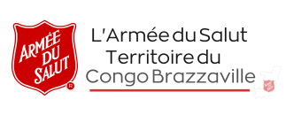
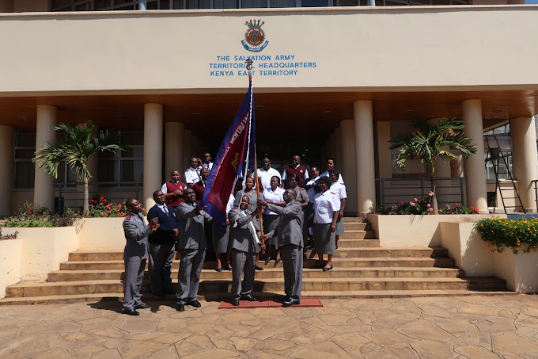
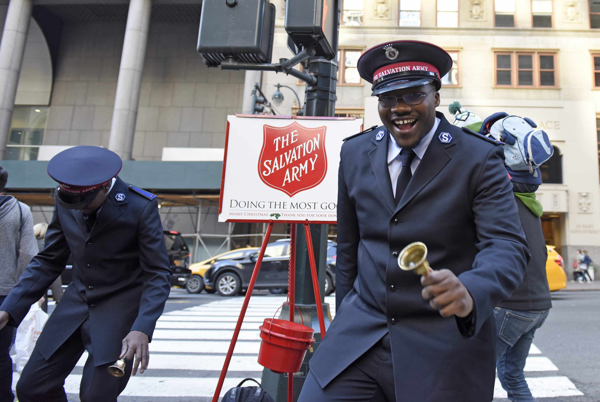
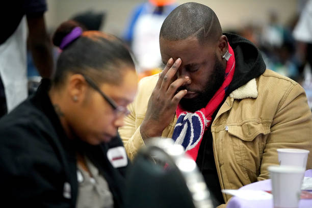

Nous croyons que la Bible est inspirée par Dieu. Elle est le fondement et l’autorité de notre foi et de notre vie.
Il n’y a qu’un seul Dieu qui a créé toutes choses et qui continue de soutenir et de guider de manière créative la création vers son but ultime. Dieu est une Trinité de trois personnes – le Père, le Fils et le Saint-Esprit – qui sont identiques en essence mais demeurent distinctes en tant qu’expressions différentes de Dieu.
Lorsque les êtres humains ont été créés à l’image de Dieu, ils étaient en parfaite relation avec Dieu, mais ils se sont rebellés. En conséquence, cette relation a été gâchée à chaque génération.
Dieu, qui est amour et saint, ne peut pas simplement accepter cette rébellion (qui est appelée péché), et donc tous les hommes sont exposés au jugement de Dieu.
Par la vie d’obéissance, la souffrance, la mort et la résurrection de Jésus, qui est à la fois pleinement divin et pleinement humain, Dieu a ouvert la voie pour que la relation avec l’humanité soit restaurée afin que nous puissions également être obéissants au Père.
Pour jouir d'une relation restaurée, il est nécessaire de se détourner de notre désobéissance et de se tourner vers Dieu, de croire en la puissance de Jésus pour apporter le salut et ainsi faire l'expérience du Saint-Esprit qui apporte une vie nouvelle. Cette expérience se confirme dans la vie de chaque croyant.
Lorsque, grâce à la grâce divine, notre relation avec Dieu est réparée, nous prenons conscience d’une transformation spirituelle positive qui se produit dans tous les aspects de notre vie et nous devenons de meilleures personnes à tous égards.
Pour que cette nouvelle vie puisse être maintenue, nous devons, en obéissance à Dieu, faire continuellement des choix conscients pour vivre selon les intentions de Dieu. Nous le démontrons dans la façon dont nous aimons et servons les autres. Tous les chrétiens, par leur coopération avec la grâce de Dieu, peuvent devenir et être gardés saints (à l'image du Christ) jusqu'au retour de Jésus.
Ces onze doctrines énoncent les croyances formelles de l’Armée du Salut telles que détaillées dans l’annexe 1 de la Loi de 1980 sur l’Armée du Salut. Ces doctrines définissent notre compréhension de Dieu, de l’humanité et de la relation qui se développe dans la vie chrétienne. Elles sont l’expression d’une foi personnelle et d’une vision commune.
Nous croyons que les Écritures de l’Ancien et du Nouveau Testament ont été données par inspiration de Dieu et qu’elles constituent seulement la règle divine de la foi et de la pratique chrétiennes.
Nous croyons qu’il n’y a qu’un seul Dieu, infiniment parfait, Créateur, Conservateur et Gouverneur de toutes choses, et qui est le seul objet approprié du culte religieux.
Nous croyons qu’il y a trois personnes dans la Divinité – le Père, le Fils et le Saint-Esprit, indivisibles en essence et égaux en puissance et en gloire.
Nous croyons que dans la personne de Jésus-Christ, les natures divine et humaine sont unies, de sorte qu’Il est vraiment et proprement Dieu et vraiment et proprement homme.
Nous croyons que nos premiers parents ont été créés dans un état d'innocence, mais que par leur désobéissance ils ont perdu leur pureté et leur bonheur, et qu'en conséquence de leur chute tous les hommes sont devenus pécheurs, totalement dépravés, et comme tels sont justement exposés à la colère de Dieu.
Nous croyons que le Seigneur Jésus-Christ, par sa souffrance et sa mort, a fait l’expiation pour le monde entier, afin que quiconque le veut soit sauvé.
Nous croyons que la repentance envers Dieu, la foi en notre Seigneur Jésus-Christ et la régénération par le Saint-Esprit sont nécessaires au salut.
Nous croyons que nous sommes justifiés par grâce, par le moyen de la foi en notre Seigneur Jésus-Christ, et que celui qui croit a le témoignage en lui-même.
Nous croyons que le maintien dans un état de salut dépend d’une foi obéissante et continue en Christ.
Nous croyons que c’est le privilège de tous les croyants d’être entièrement sanctifiés et que tout leur esprit, leur âme et leur corps soient préservés irréprochables jusqu’à la venue de notre Seigneur Jésus-Christ.
Nous croyons à l’immortalité de l’âme, à la résurrection du corps, au jugement général à la fin du monde, au bonheur éternel des justes et au châtiment sans fin des méchants.
Explorez plus en détail les doctrines dans le Manuel de doctrine de l’Armée du Salut .
Les choix que nous faisons dans cette vie auront des conséquences éternelles. Si nous choisissons notre propre voie, nous devrons faire face à la douleur de nous être séparés de Dieu. Cependant, choisir la voie de Dieu conduit à la joie d'une relation éternelle avec Dieu.
L’adoration est la façon dont nous montrons à Dieu combien nous l’aimons. L’adoration peut avoir lieu dans les églises, à la maison, à l’extérieur, sur les lieux de travail – n’importe où !
Les lieux de culte de l’Armée du Salut portent de nombreux noms différents, mais quel que soit leur nom, ce sont des églises chrétiennes, ouvertes à tous.
L'adoration peut s'exprimer de plusieurs façons. Lors d'un culte collectif à l'Armée du Salut, vous pouvez vous attendre à vivre certaines des expériences suivantes :